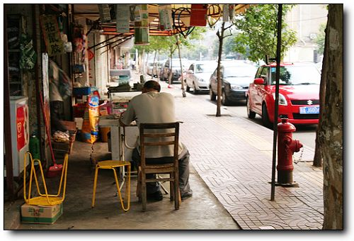
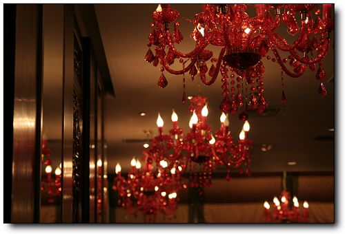
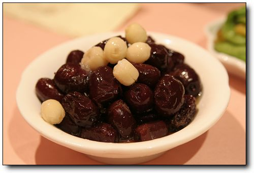

看图说话@June 13 @ Jun 14, 2009
晚上朋友约了一起吃饭，本打算穿这件连体裤外出，最终还是作罢。
周五同事说“你的确胖了，身体都圆了....”
呃.....妈呀......

路边两只小小狗打着玩，其中一只回头看我时的表情，真是好开心好开心的呢；

看报纸的杂货铺老板；

看车的收费员与走过的美女；

南京特产盐水鸭，这样的小店遍布南京的大街小巷；

最终穿了宽松的连衣裙出门，到了朋友居住的小区；

她家的电视新闻上报道：江苏第一例甲型H1N1流感在南通出现，是从日本出差回国的某公司总经理，其留学日本的侄子传染给他的。南京也快了吧？只要出现一例，估计大街上就能见着不少戴口罩的。

包围曝光降低两格后拍下的灯具，是不是有那么些鬼魅的气质？

自从剪了短发后便没有拍过清晰大头照，这次拍了许多；

又一张，脸无可奈何地圆啊圆啊，什么时候是尽头？
红枣莲子；

尖椒青豆荚；

黑鱼做的沸腾鱼。那么有弹性的鱼肉，一定不能煮的？是不是用滚开的油浇上去熟的呢？

最爱的谗嘴蛙。与别家饭店不同的是，里面的牛蛙都是整只整只的大牛蛙，很过瘾；

能有人把我拍的这么清楚，真不容易；

沸腾鱼乡停业一段时间后重新开业，搬到原先同层楼对面的房间，店面小了许多，菜单也简陋到一张纸.....谗嘴蛙比过去要稍微咸一些；

吃到人去楼空，其实是聊到人去楼空；

开瑜珈馆的MM，性格很好的女孩子。
发现周围的女性朋友多是美女啊，最主要是气质都不错。
有本心理杂志上说能和美女做朋友的同性心理健康，抗击打能力强，性格好。

缩小后的照片失去了细节的美，有好几张我自己看了都惊讶，可能是灯光太照顾我的相机了；

镜子里的她；

红到心窝里去了。

25 Responses to “看图说话@June 13”
2009-06-14
一点都不圆。出门那套很清爽，喜欢！
2009-06-14
倒，你还没睡觉？
2009-06-14
眼镜不错，配得很好。
缩小的照片细节表达的恰到好处，比如毛豆荚表面的质感：）
2009-06-14
你那也叫圆啊?我看真正好.
2009-06-14
你出门穿的那套和你想穿的那套真是两个世界不同的两个人，出门穿的那套就是你一直的风格，为什么不试试另一个风格呢？挺好看的。
2009-06-14
左眼是双眼皮,右眼反之,好奇怪呀
2009-06-14
你那么苗条，怎么还说胖？如果你胖，我们都是猪了。
2009-06-14
一点都不胖,很好看.是说真的.
又见沸腾鱼乡,想家啊~~~~~~~
2009-06-14
哈，你那如果也叫圆的话，就没有天理了。
那裤子真是感觉很怪，是连体的？
2009-06-14
你哪里胖，没点肉还是女人么？
2009-06-14
最喜别样风情的第一张和流光溢彩的最后一张。个人觉得你还可以再“胖”一点，再结实一点，会更女人。
2009-06-14
hehe,我觉得这里有个人好喜欢你哦，每次夸你都夸得好使劲儿。呵呵。
2009-06-14
第一张的连体裤，好像不劈叉就对不起它哦。
那张盐水鸭的雾气很生活。
还有，你和朋友都很清秀哦。
2009-06-14
呵呵，想穿的那套很有异域风情呢，挺好的。
感觉很配你和瑜伽MM的约会哈~~
2009-06-14
夏天的甜言蜜语，让人想穿上棉袄，拜托你谁都别夸了，不然这里的人要集体穿棉袄过夏天了，拜托！
2009-06-15
哎呀，我是不是又当了那个皇帝新衣里的小孩。Christina,对于糖衣炮弹要面不改色心不跳，接住喽。那个北京的同志不好意思了哈，您接着夸接着夸，你夸得挺好的。我这就收声。
2009-06-15
还真是的，见过的瑜伽教练多是美女，气质超好呢，尤其性格也好。我咋没坚持练下去呢，如果练到现在说不定既美了自己又能跟她们交上朋友，岂不是一举两得，嘻嘻！
2009-06-15
我会珍惜说真话的小孩，呵呵~其实我女友每次看到都会发短信给我…呕吐一番！他“使劲”地夸我，是把我当白痴~
2009-06-15
沸腾鱼乡好吃么，有空我也要去尝尝
我现在已经比不上你那么爱拍照片了
2009-06-15
惯性思维去看故事？其实早在她开瑜伽馆之前我们就认识了，当时她在做录音的工作。而且我不喜欢瑜伽，从来就没去练过，看看就不喜欢，奇怪吧？
2009-06-15
其实我觉得他可能真的是喜欢你的风格和照片，也没什么恶意。你肯定把别人打击得够呛。我也不喜欢瑜伽，慢死个人mei。
2009-06-15
呃。。。。。。
因为他喜欢他没有恶意，我就得天天穿棉袄？
那不是很苦自己么？我憋屈过了，不想再这样下去。
2009-06-15
呃，这个，俺最近也胖了，打电话时一笑，脸蛋就碰能到挂机键。。。所以，你还好啦。
2009-06-15
呃。。。。。。没注意到我不敢把胳膊垂直放吗？
跟俺娘说好象胖了。。。俺娘电话那头赶紧说：“你可不能太胖啊，要控制。”我就没体会过控制体重的感受。
2009-06-15
要听你娘的话！没错的。分明你是饱汉子不知饿汉子的饥哈。
Leave A Reply
存档只读，评论已关闭。